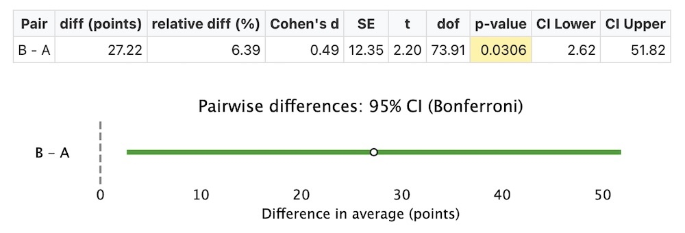

統計的推測（Draft version）
A/Bテストで得られた「2群の平均の差」を推定しながら、統計的推測の意味と具体的な方法を紹介します。
- 検定: 仮説を評価する
- 信頼区間: 推定の不確実性を評価する
- ベイズ推定: データと事前分布をもとにパラメーターの事後分布を推定し、その不確実性を評価する（確率で評価する）
統計学の基本的な考え方
データを集めて整理して比較する。データの傾向を把握・推測して、判断に役立てる。そのときに活躍する統計的な手法では「どのようにデータを眺めているのか」を説明します。
その平均に差はあるか
実務においてA/Bテストの結果が得られたとき、まずは処置群と対照群でどのくらいの違いがあったかを確認しておきたいです。
サンプル事例
- あるカフェチェーンで「ラテ」の店内POPを刷新する施策が進行中。
- A店では従来POPを、B店では新POPを掲出して、A/Bテストを模した比較実験を実施。
- テスト初日の昼の会議で初動速報を求められているため、初日の開店から3時間以内に来店してラテを購入した各店40人前後の顧客単価（1人あたりの購入額）を集計。顧客単価が変化しているかを検証する。
補足
実務での利用場面をイメージしやすくするため、現実的にありそうな設定にしています。ここでは統計的推測の説明しやすさを企図して、以下想定が成り立っているとします。
不足条件
- 処置割当単位（店舗）と分析単位（顧客）が一致していない（分析単位は個別の観測値ではあるが、同じ店舗の顧客は店舗環境を共有しているため、同一店舗内の観測値は相関している可能性がある）。
- 2店舗両方に同じ顧客が含まれる可能性がある。
想定条件
- 各店の顧客単価は、それぞれの母集団から得られた「独立した」観測値とする。
- 2店舗の標本は互いに独立しているものとする（どちらにも来店購入した顧客はいない）。
実務では、理想的な実験条件やデータを常に用意できるとは限りません。ここでは、現実的な利用場面をイメージできるように簡略化した設定を用い、いくつかの仮定を置いて統計的推測の方法を説明します。実際の分析では、こうした仮定やデータの制約を意識しながら、得られた結果を意思決定の参考情報として活用することが大切です。
■処置効果の捉え方
2店舗は立地や客層、テスト以前の売上規模やラテの販売動向などが似ており、顧客の分布も大きく違いません。また片方の店舗のみで発生するイベントはなく、施策の有無と顧客単価の両方に影響しそうな、店舗間の系統的な違いはなさそうです。とはいえRCTではないため（交絡要因がないとは言い切れない）、2群の差がそのまま施策による因果効果とはみなしにくいです。
■Raw Data
Group A（Control） = [470, 360, 380, 390, 420, 420, 480, 420, 440, 420, 480, 410, 420, 480, 360, 410, 420, 410, 480, 530, 360, 420, 450, 420, 360, 420, 360, 510, 540, 360, 440, 390, 480, 420, 360, 390, 420, 480, 360, 420, 500]
Group B（Test） = [450, 360, 450, 420, 420, 470, 590, 420, 480, 360, 530, 360, 530, 510, 440, 420, 380, 420, 480, 480, 530, 420, 550, 420, 420, 530, 440, 510, 480, 380, 420, 530, 360, 360, 500, 480, 470, 480, 420]
各群の平均値を算出し、その差がどのくらいかを見るのは、分析初期段階における有効手段の一つです。A店（従来通りのPOPを掲出した対照群）の平均顧客単価は426円、B店（新POPを掲出した処置群）は453円、2群の平均値には約27円の差がありました。
| Group | N | Mean | Std | Min | Max |
|---|---|---|---|---|---|
| Group A（Control） | 41 | 425.9 | 49.1 | 360.0 | 540.0 |
| Group B（Test） | 39 | 453.1 | 59.2 | 360.0 | 590.0 |
平均値の差は施策によって生じたようにも思えます。たまたま生じた偶然の出来事にも思えます。しかし手元の観測データをどれだけ眺めても、今の平均値の差がたまたまなのか（どのくらい変動してもおかしくなさそうなのか）はわからないです。
かといって「平均で27円差でした」との事実情報だけの報告では、結果をどう受け止めればいいのか関係者は困惑するでしょう。こんなときに役立つのが統計的推測です。
統計的推測
統計学では、「今手元にある観測データは、なんらかの確率的なデータ生成過程から得られた」といった捉え方をします。
- 各店約40人のデータは、ラテ顧客単価データ発生装置（母集団）からランダムに抽出されたサンプル（標本）である、とモデル化して考える。
- 観測データを手がかりにして、背後にある母集団やデータ生成過程を推測する。
標本から母集団の特徴を推測できる背景には、確率論に基づく統計学の理論があります。例えば大数の法則などの理論的性質を根拠として、標本データの平均（実測値）を、母集団における平均（母平均）の推定値として利用します。
※大数の法則: 適切な条件のもとで標本抽出を繰り返し、標本サイズを大きくしていくと、標本データにおける平均や比率が母集団における平均や比率に近づくこと。
こうした統計的推測により母集団の特徴を推し量ることで、観測された平均値やその差27円はたまたま発生したのか、この値はどのくらい変動しそうかなどが解釈しやすくなります。
統計的推測にはいろんな方法があり、その一つが検定です。検定にもいろんな方法があります。サンプル事例のように「2群の母平均に差があるか」が関心事の場合にはt検定が用いられます。
検定と信頼区間
同じ考え方にもとづく、検定と信頼区間について説明します。
検定の考え方
検定は、帰無仮説のもとで今手元にある観測結果がどれほどめったにない（たまたま発生したとは考えにくい）かを一定のルールに基づいて判断する、というアプローチをとります。以下はt検定の例です。
- まず「2群の母平均に差はない」という帰無仮説を設定します。
- 有意水準を「5%」と設定します。
- 帰無仮説が正しいと仮定した場合に、今回観測された結果と同じか、それ以上に極端な結果が起こりうる確率（p値）を算出します。
- p値があらかじめ設定した有意水準以下の場合は、帰無仮説を棄却します。帰無仮説のもとでは今回の観測結果はめったにない出来事と判断します。
- p値が有意水準を上回る場合は、帰無仮説を棄却する十分な証拠が得られなかったと判断します。
※有意水準: 帰無仮説を棄却するかどうかのしきい値として、検定する前に設定しておく基準値。5%という値がよく用いられる。
理論的背景
このやり方がうまく機能する背景には、300年前の学者さんたち（ド・モアブル、ラプラスなど）が発見した確率分布の性質をはじめ、長い時間をかけて発展してきた理論などがあります。
- 標本平均の差は標本抽出によって変動する: 今回観測された27円差は、標本データから計算された値です。同じ条件で標本抽出を繰り返せば、そのたびに異なる平均値の差が得られます。
- その変動を確率分布として考える: 標本抽出を繰り返したときに得られる統計量の分布を標本分布と呼びます。検定では帰無仮説が正しいと仮定した場合の標本分布を考えます。
- 中心極限定理によって分布の形状を近似できる: 2群のデータが独立に抽出され、分散が有限であるなどの条件を満たす場合、サンプルサイズが十分に大きければ、中心極限定理によって標本平均の差の標本分布は正規分布に近づきます。
- t分布を使ってp値を算出する: 観測された平均値の差を標準誤差で割って検定統計量を計算し、p値を求めます。
検定の強み
有意水準を設定して検定をおこなっても、誤って帰無仮説を棄却する、すなわち本当は差がないのに差があると間違った判断をする可能性は残ります（第一種の過誤と言います）。
有意水準5%の検定であれば、5%の確率で判断を間違えるリスクを抱えています。それでも、
- 帰無仮説が正しい（本当に差がない）場合に、
- 検定の前提条件や運用上のルールが満たされていれば、
- （同じ条件で独立したテストを実施して）同じ検定をおこなったときに、
- 誤って帰無仮説を棄却する確率は原則として5%以下におさまります。
つまり、あらかじめ決めた有意水準で誤判定率を長期的視点で制御・管理しやすいのが検定の強みです。
Welch t検定
母平均の差を評価するt検定には複数の種類があります。ここでは、2群の分散が等しいと仮定しない「Welch t検定」を使います。エクセルやスプレッドシートの関数で簡単に実行できます。
- 有意水準を「5%」と設定します。
- 関数T.TEST を呼び出します。
- 2群のデータ範囲をそれぞれ指定します。
- その次は、基本的には「2」を指定します（両側検定: 新POPによる単価増だけでなく単価減も想定）。
- その次は、基本的には「3」を指定します（等分散を仮定しないWelchのt検定）。
=t.test(B4:B44,C4:C42,2,3)といった感じです。- するとp値が出力されます。

t検定あれこれ
- Welch t検定は等分散仮定時にも使用してよい（studentのt検定を使用する必然性は薄い）。
- t検定の前に、必ず正規性検定をおこなう必要はない。
- サンプルサイズが小さい場合は、分布の形状や外れ値を確認することが望ましい。
結果の読み解き方
- セルにはp値（0.0306）が出力されました。
- 2群の母平均に差がないと仮定した場合に、今回観測された平均値の差27円と同じか、それ以上に極端な差が得られる確率が3.06%であることを意味します。
- 有意水準5%（0.05）よりも小さいため、今回の観測結果はめったにないと判断します。
つまり、有意水準5%のもとでは帰無仮説は棄却され、2群の平均値には統計的に有意な差があるといえそうです。Welch t検定により、今回観測された平均値の差27円は、たまたま発生した出来事とは考えにくいことが見えてきました。
信頼区間
観測された2群の平均の差27円は実測値です。そして大数の法則などを拠り所にした、母平均の差の推定値でもあります。とはいえ手元の標本から推定した値が母平均の差とぴったり一致するとは限りません。
前述の通り、同じ条件で標本抽出を繰り返せば、そのたびに異なる平均値の差が得られるためです。27円という推定値は不確実さを含んでおり、しかもピンポイントの点推定なのでどのくらい不確かなのか見当がつきません。
信頼区間（CI: Confidence Interval）は、このような推定の不確実性を評価するためのものです。点推定をもとに、その不確実性（標本のバラツキなど）を考慮して、母平均の差を区間推定の形で示します。
| 検定（p値） | 信頼区間 | |
|---|---|---|
| 知りたいこと | 帰無仮説とデータの整合性 | 母平均の差の推定範囲 |
| わかること | 帰無仮説のもとでの観測結果の珍しさ | 差の大きさと推定の不確実性 |
| 使い道 | 統計的に有意か | どの程度の差が考えられるか |
信頼区間の算出
信頼区間を算出するには、複数の関数が必要で手間なので、ここではWelch t検定と信頼区間の算出をまとめておこなうことができるWebサイトを利用します。
- 2群の観測データを入力
- 入力エリア下段表のサンプルサイズ（N）などを見て、入力データが適切に読み込まれていることを確認
- Runボタンを押す
- ページ下部に検定結果が表示されます
※「群間の差」タブのWelch t検定の結果を参照してください。

結果の読み解き方
- p値: p-value（0.0306） T.TEST関数での計算結果と同じになります（エクセルなどの書式設定次第では端数処理の影響で少し異なる場合もあります）。
- 信頼区間（CI）: CI Lower（2.62） CI Upper（51.82）2群の母平均の差の95%信頼区間はおよそ3円～52円であることを意味します。
信頼区間の算出により母平均の差の区間推定が得られたことで、おおまかな効果の大きさ（27円）と、その不確実性（3円〜52円）が見えてきました。
95%信頼区間の意味するもの
イメージとしては、同条件のA/Bテストと信頼区間の算出を100回おこなえば、100個の信頼区間のうち、約95個には真の値（本当の母平均の差）が含まれる、すなわち割合を表す（実際に100回テストしたときに必ず95%になるわけではない）。
- 推定値の不確実性を「長期的視点で」評価している。
- 真の値を含む「割合」を表している。
- 真の値が3円～52円の範囲にある確率が95%という意味ではない。
- 今回得られた信頼区間（3円～52円）については、真の値を含んでいるか、含んでいないかのどちらかである。
エクセルやスプレッドシートで算出したいとき
A列をGroup A（Control） B列をGroup B（Test）として、95%信頼区間の場合（一部関数における端数処理の影響で、ツールでの出力結果と少し異なるときもあります）。
| 指標 | 計算式 | 意味 |
|---|---|---|
| n1, n2 | =COUNT(A2:A42), =COUNT(B2:B42) | サンプルサイズ |
| m1, m2 | =AVERAGE(...) | 標本平均 |
| v1, v2 | =VAR.S(...) | 不偏分散 |
| SE | =SQRT(v1/n1 + v2/n2) | 標準誤差 |
| t | =(m2-m1)/SE | t値 |
| dof | =(v1/n1+v2/n2)^2 / ((v1/n1)^2/(n1-1) + (v2/n2)^2/(n2-1)) | 自由度 |
| p値 | =T.TEST(A2:A15, B2:B15, 2, 3) | |
| t臨界値 | =SQRT(dof*(1/BETA.INV(0.05, dof/2, 0.5) - 1)) | |
| CI Lower | =(m2-m1) - t臨界値*SE | |
| CI Upper | =(m2-m1) + t臨界値*SE |
検定と信頼区間でわかったこと
検定と信頼区間は、同じ統計的枠組みに基づいています。サンプル事例のようにWelch t検定とそれに対応する95%信頼区間を用いる場合、2つの結果には整合性があります。
| 検定結果 | 信頼区間 | 意味 |
|---|---|---|
| p値は有意水準5%以下 | 95%信頼区間に0が含まれていない | 母平均の差が0であるとは考えにくい |
| p値は有意水準5%を上回る | 95%信頼区間に0が含まれている | 母平均の差が0であるという帰無仮説を棄却するだけの十分な証拠はない |
95%信頼区間（3円〜52円）は0を含んでおらず、Welch t検定で得られたp値（0.0306）< 有意水準0.05と一致しています。
検定と信頼区間により、観測された平均の差が帰無仮説のもとでは起こりにくい結果であることと、母平均差の推定値とその不確実性を確認できました。
テスト結果の実績値「平均で27円差でした」という事実情報に加えて、結果には統計的に有意な差があることを提示し、効果の大きさの推定範囲も示すことで、関係者が解釈しやすい報告内容にアップデートできました。
そして、おそらく以下のような質問が予想されます。
- 「新POPによって顧客単価が増加する確率はどのくらいか」
- 「20円以上の増加が見込める可能性はどのくらいか」
- 「逆に、新POPで顧客単価が落ち込むリスクはどの程度か」
検定や信頼区間は、こうした問いに答えるためには設計されていません。これらに答えるべく、検定や信頼区間とはまた違ったアプローチをとる統計的推測の一つが、ベイズ推定です。
次に、今回のデータを使ってベイズ推定をおこない、母平均差の事後分布からどのような情報が得られるのかを見ていきます。